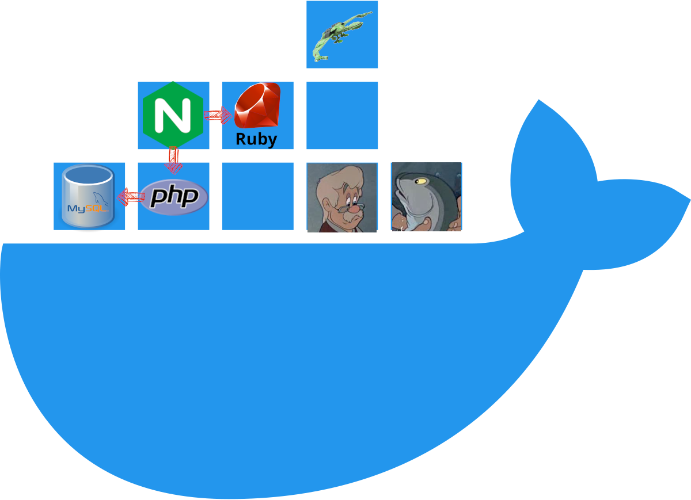

# Docker Compose .grid-40[ Learn the basics of [Docker Compose][docker-compose], a tool for defining and running **multi-container applications**. This material is part of [architecture & deployment course](https://github.com/MediaComem/comem-archidep) for [Media Engineering](https://heig-vd.ch/formations/bachelor/filieres/ingenierie-des-medias). ] .grid-60[ <img class="w100" src="./images/docker-compose.jpg" /> ] .container[ **You will need** * A [Docker][docker] account * [Docker Desktop][docker-desktop] installed on your machine * *[Docker Compose][docker-compose] is included with Docker Desktop* **Recommended reading** * [Docker](../docker/) ] --- ## The Docker philosophy .breadcrumbs[<a href="#1">Docker Compose</a>] .grid-35[ A container is **ephemeral**: The same container may not run in perpetuity. Many replicas may be launched. New containers will replace crashed ones. ] .grid-65[ ] .container[ * Any code running in your container should be included in the image. **If the code needs revision, update the image** and run a new container. * Pass **configuration** via environment variables. * Do not manage **persistent storage** within containers. Delegate storage to a third-party service, another container (e.g. running a database), or mount a volume to keep data when a container is created again. ] --- ### The Docker philosophy: isolation .breadcrumbs[<a href="#1">Docker Compose</a> > <a href="#2">The Docker philosophy</a>] > Docker containers are **isolated services**, not VM replacements. <p class="center">  </p> --- ### The Docker philosophy: microservice architecture .breadcrumbs[<a href="#1">Docker Compose</a> > <a href="#2">The Docker philosophy</a>] A container should have **only one mission**. Containers allow subdividing the functions of a system into smaller collaborating pieces. * A Docker image should **contain what it needs** to provide its service and run as quickly as possible, and nothing else! Minimize your dependencies. The simpler it is, the more reusable and portable it is. * For maximum efficiency and isolation, each container should address one specific area of concern and **delegate other functions to other containers**, e.g. a web application container will delegate storage to a separate database container. .grid-60[ <p class="center"> </p> ] .grid-40[ <p class="center"> </p> ] --- ## What is Docker Compose? .breadcrumbs[<a href="#1">Docker Compose</a>] .grid-50[ Docker Compose is a tool for defining and running multi-container applications, making it easy to manage **services, networks, and volumes** in a single, comprehensible [YAML][yaml] configuration file called the **Compose file**. ] .grid-50[ ```yml services: # Application service app: build: . depends_on: - db environment: DB_URL: postgres://db:5432/app ports: - "8080:80" restart: always # Database service db: image: postgres:16.1-alpine environment: POSTGRES_DB: awesome-db POSTGRES_USER: example POSTGRES_PASSWORD: changeme restart: always volumes: - "dat:/var/lib/postgresql/data" volumes: dat: ``` ] --- ### Compose services .breadcrumbs[<a href="#1">Docker Compose</a> > <a href="#5">What is Docker Compose?</a>] .grid-50[ The main unit of work with Docker Compose is a **service**: A service is an **abstract definition of a computing resource within an application** which can be scaled or replaced independently from other components. Services are defined in the **Compose file**. ] .grid-50[ ```yml app: build: . depends_on: - db environment: DB_URL: postgres://db:5432/app ports: - "8080:80" restart: always ``` ] .container[ .grid-50[ <p class="center"> </p> ] .grid-50[ **Services are backed by one or multiple containers**, run by the platform according to specified requirements. As services are backed by containers, they are defined by a Docker image and set of runtime arguments. All containers within a service are identically created with these arguments. ] ] --- ### The Docker Compose command line .breadcrumbs[<a href="#1">Docker Compose</a> > <a href="#5">What is Docker Compose?</a>] Docker Compose is also a **Docker subcommand**. Based on a Compose file, it can: * Start, stop, and rebuild services: * `docker compose up [service]` * `docker compose stop [service]` * `docker compose build [service]` * View the status of running services: * `docker compose ps [service]` * Stream the log output of running services: * `docker compose logs [--follow] [service]` * Run a one-off command on a service: * `docker-compose run <service> <command> [args...]` > See `docker compose help` for more commands. --- ### Other Compose concepts .breadcrumbs[<a href="#1">Docker Compose</a> > <a href="#5">What is Docker Compose?</a>] .grid-50[ **Networks** are the layer that allow services to communicate with each other. Compose lets you configure named networks that can be reused across multiple services for greater control and security. ] .grid-50[ **Volumes** are persistent data stores implemented by the container engine. Compose offers a neutral way for services to mount volumes, and configuration parameters to allocate them to infrastructure. ] .container[ .grid-50[ **Configs** allow services to adapt their behaviour without the need to rebuild a Docker image. Services can only access configs when explicitly granted in the Compose file. Configs are mounted as files into the file system of a service's container. ] .grid-50[ **Secrets** are a flavor of Configs focusing on sensitive data, with specific constraint for this usage. Services can only access secrets when explicitly granted in the Compose file. Secrets are either read from files or from the environment. ] ] --- ## Why use Docker Compose? .breadcrumbs[<a href="#1">Docker Compose</a>] * **Simplified control**: Orchestrate multi-container applications in a single file, making your application environment easy to replicate. * **Efficient collaboration**: Compose files are easy to share, facilitating collaboration among developers, operations teams, and other stakeholders. * **Rapid application development**: Compose caches its configuration. When you restart a service that has not changed, Compose re-uses the existing containers. Re-using containers means that you can make changes to your environment very quickly. * **Portability across environments**: Compose supports variables to customize your containers for different environments or users. --- ## Going further .breadcrumbs[<a href="#1">Docker Compose</a>] The following tools are (completely) out of scope for this course, but interesting to learn about if you want to go further with Docker: * [Traefik][traefik] is a **reverse proxy developed to integrate with microservices** (like Docker Compose services). Using it, you can get rid of nginx and its site configuration files. Traefik can interrogate the Docker Daemon about running containers and [configure itself automatically](https://doc.traefik.io/traefik/providers/docker/). * [Docker Swarm][swarm] can network a cluster of Docker engines together across multiple servers, allowing you to **aggregate separate machines into one giant pool of resources**. You can then simply deploy Compose services to the swarm and containers will be automatically spawned on one of the cluster's machines. * If you want to go even further into large-scale Docker deployments, look at [Kubernetes][k8s], an open-source system for **automating deployment, scaling, and management of containerized applications**. It groups containers that make up an application into logical units for easy management and discovery. --- ## References .breadcrumbs[<a href="#1">Docker Compose</a>] * [Docker Compose][docker-compose] * [Containers philosophy](https://dev.to/iblancasa/containers-philosophy-2714) * [The First Thing You Should Know When Learning About Docker Containers](https://medium.com/factualopinions/the-first-thing-you-should-know-when-learning-about-docker-containers-e0de29ddb6c3) [docker]: https://www.docker.com [docker-compose]: https://docs.docker.com/compose/ [docker-desktop]: https://www.docker.com/products/docker-desktop/ [compose-configs]: https://docs.docker.com/compose/compose-file/08-configs/ [compose-networks]: https://docs.docker.com/compose/compose-file/06-networks/ [compose-secrets]: https://docs.docker.com/compose/compose-file/09-secrets/ [compose-volumes]: https://docs.docker.com/compose/compose-file/07-volumes/ [k8s]: https://kubernetes.io [swarm]: https://docs.docker.com/engine/swarm/ [traefik]: https://traefik.io [yaml]: https://yaml.org